GPT / OpenAI✓ Готово
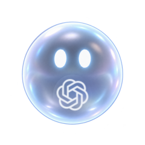
Мягко округляется, подпрыгивает и показывает результат.
В idle — наш знакомый призрак.
Когда есть результат или нужен ответ, он меняет форму и показывает, какой агент обращается к тебе.

Мягко округляется, подпрыгивает и показывает результат.
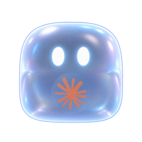
Наклоняется к тебе и ждёт ответа или подтверждения.
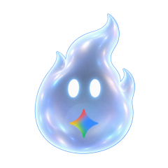
Тянется, покачивается и шевелит кончиком хвостика.
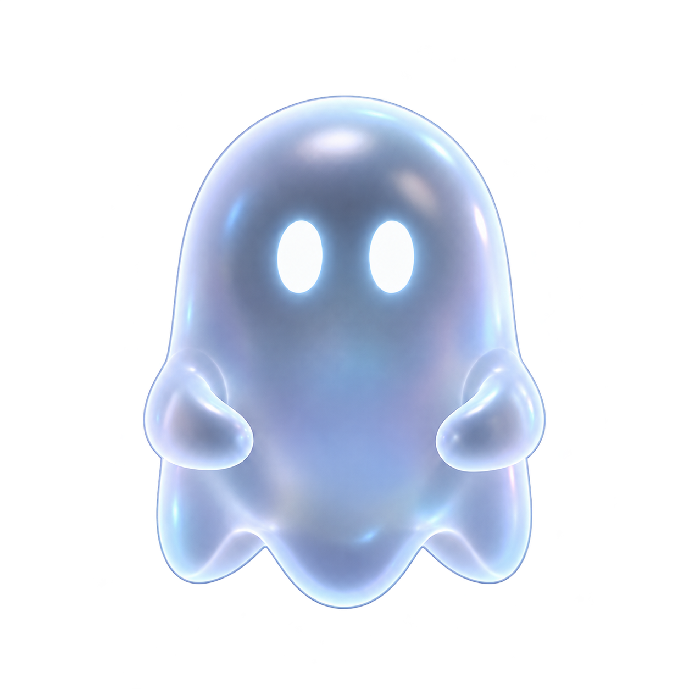
Idle / основа
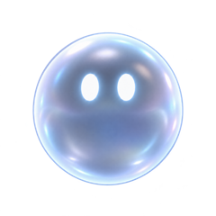
Результат
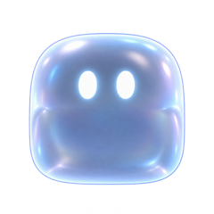
Вопрос
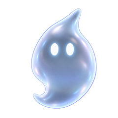
Работа / игра
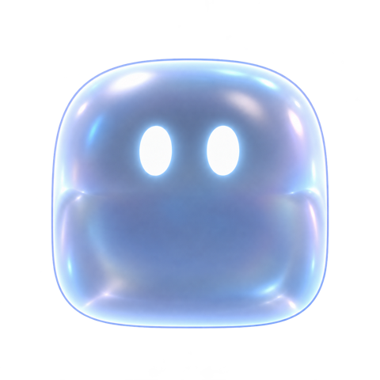

Логотип находится ниже лица. Здесь можно примерить файл компании: он останется только в этом окне браузера. Для сохранения готовых вариантов в наборе есть отдельный скрипт.
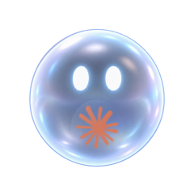
Шар · ClaudeSVG ↗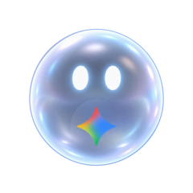
Шар · GeminiSVG ↗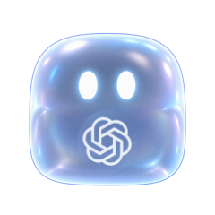
Куб · GPT / OpenAISVG ↗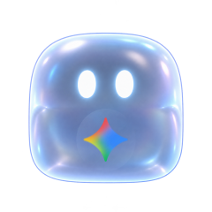
Куб · GeminiSVG ↗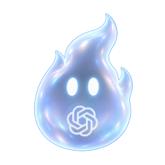
Огонёк · GPT / OpenAISVG ↗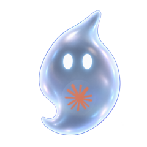
Огонёк · ClaudeSVG ↗Сначала прячутся лапки, тело мягко перетекает в шар или куб, затем появляется знак агента. Во время превращения логотип скрыт, поэтому его не перекосит.
Логотип хранится отдельно от анимации. У каждого будущего кадра будут координаты и прозрачность знака. На 18–32 px агента лучше обозначать меткой рядом с маскотом.